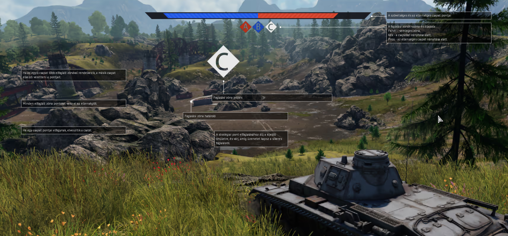

A játékban harci repülőkkel, harckocsikkal, hajókkal és helikopterekkel játszhatunk a '30-as évek korszakától
egészen '90-es évekig (de vannak napjainkból származó járművek is). A War Thunder pályáinak átlagos mérete 31x31
km -től 131x131 km- ig terjed, bár a játékot meghajtó motor nagyobb, akár 90000 km ²-es pályákat is képes lenne
megmozgatni. A játékot akár Virtuális valóságban is lehet játszani.
Játékmódok: Árkád csata, Szimulátor csata, Realisztikus csata, Egyéni csata, Harckocsi- és légiostrom, Teszt csata.

Játékmenet
Két ellenséges csapatnak kell 1 vagy több pontot vagy az ellenség bázisát elfoglalni. Ha a játékos csapata birtokol több pontot akkor az ellenség-, fordított esetben a játékos csapatának fogynak az "életpontjai".Árkád módban minden játékos 3-szor tud belépni egy csatába, 3 különböző járművével (kivéve ha van tartalék jármű kártyája).
Hogyan lehet nyerni
egyik csapat elveszíti összes "életpontját"egyik csapat elveszíti minden járművét